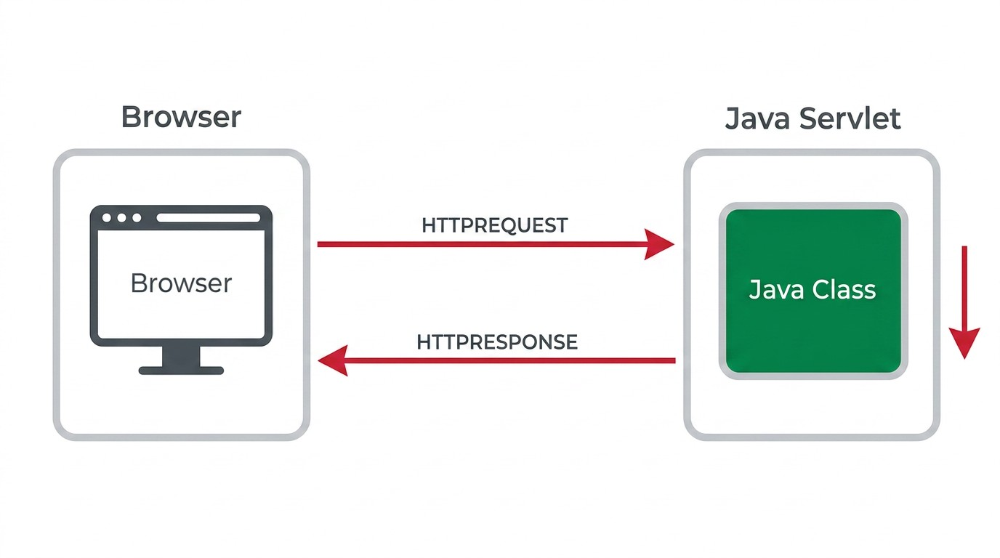

1 Web Application Architecture
1.1 The Problem: Building a Web Application from Scratch
A Web application is not simply a program that runs on a single computer: it is a program that answers requests coming from multiple clients, simultaneously, over the network. Built from scratch, with no supporting platform, an application of this kind would have to solve, on its own, a set of problems common to any system of this sort:
- Receiving and interpreting requests coming from the network
- Building and returning responses in the format expected by the client
- Handling multiple concurrent requests (multi-threading)
- Managing database connections
- Retaining information across successive requests from the same user
- Protecting resources from unauthorised access
Solving all of these problems again and again, application after application, would be a waste of effort. This is exactly why enterprise platforms exist, providing these services ready to use, and freeing developers to focus on the business logic of the application.
1.2 Two Orientations: Presentation vs. Service
A Web application can follow two distinct orientations, depending on the kind of response it produces:
- Presentation-oriented
- Generates interactive Web pages (HTML, CSS and dynamic content) in response to each request. This is the traditional Web application model, meant to be consumed directly by a human user through a browser.
- Service-oriented
- Implements the endpoint of a Web service, typically returning structured data in JSON or XML format instead of HTML. This model is meant to be consumed by another program: a mobile application, a single-page application, or another service.
This distinction largely maps onto the split between front-end (the part of the application that interacts directly with whoever uses it) and back-end (the part that processes logic and data). A presentation-oriented application tends to blend these two responsibilities into a single server-side component; a service-oriented application separates them clearly, leaving the front-end entirely up to the client.
1.3 The MVC Pattern
Organising all of an application’s code as a single undifferentiated block quickly becomes unmanageable: the code that processes the request, the code that accesses data, and the code that generates the response end up tangled together, hard to test or change independently. The Model-View-Controller (MVC) pattern solves this by splitting the application into three distinct responsibilities:
- Model
- Represents the application’s data and business logic, independently of how it is presented. In a Web application, the Model is typically responsible for accessing the database and returning already-validated information.
- View
- Responsible for presenting the data to whoever requests it, without containing business logic. In a presentation-oriented application, the View generates HTML; in a service-oriented application, there is, in fact, no server-side View at all: the response is just structured data (JSON), and it is the client that decides how to present it.
- Controller
- Receives the request, decides which operation to perform on the Model, and chooses the View (or response format) to return. The Controller is what bridges the incoming HTTP request and the application’s logic.
This separation of responsibilities is one of the most recurring design principles throughout this subject. It shows up in its classic form when a server-side component acts as Controller and delegates presentation to another, which acts as View; and it shows up in a far less obvious form when the View stops existing on the server side and is instead rebuilt in the browser, from JSON data.
1.4 Three Pieces: Frontend, Middleware and Backend
Both the presentation/service distinction and the MVC pattern describe the same central idea, seen from different angles: a Web application is not a single block, but a set of pieces with distinct roles, communicating with one another. Throughout this course, those pieces always reduce to the same three:
- Frontend
- The part of the application that runs on the client side (typically a browser), responsible for presenting information and collecting input from whoever uses it. It largely corresponds to the View in MVC.
- Middleware
- The protocol that connects the Frontend to the Backend, carrying requests and responses between the two. In this course, that protocol is always HTTP.
- Backend
- The part of the application that runs on the server side, responsible for business logic and data access. It largely corresponds to the Model and the Controller in MVC.
This three-way division is the map for the rest of this book: first the Frontend is built (Chapter 2, in HTML/CSS/Bootstrap), then the Middleware that connects it to the server is studied in detail (Chapter 3, the HTTP protocol), and only then is the Backend built that actually answers those requests (from Chapter 4 onward, with Servlets and, later, REST APIs).
1.5 The Client-Server Model
The Middleware connecting the Frontend to the Backend rests on the client-server model: the Frontend (typically a browser) sends a request over the network, and the Backend processes that request and returns a response.

This exchange takes place through the HTTP protocol (HyperText Transfer Protocol), which has two fundamental characteristics:
- It is transaction-oriented: each interaction consists of a request followed by a response
- It is stateless: the server does not, by itself, retain any memory of a client’s previous requests
The absence of state at the protocol level does not prevent an application from needing to retain information across requests (for instance, to know that a user is authenticated). That need is addressed at the application level, not the protocol level, through mechanisms such as sessions and cookies (see Chapter 5).
The details of this protocol, the Middleware connecting these two pieces, are the subject of Chapter 3.